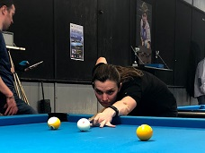

About the Site
This site is designed for people who are interested in billiards. It provides a brief overview of some pool games and links to more detailed rules, as well as descriptions of billiards tools and terminology.
About the Author
Heather Garvison is an amateur pool player and a member of the American Pool Association (APA). In addition to captaining her APA team, she started the billiards club at the University of Florida.
Getting Started
Depending on how new to billiards you are, you should start by familiarizing yourself with the tools. Then read up on the games to find out what you would like to play. Follow this up by reading up on terminology so that you will understand pool terminology when you hear it used in pool halls and instructional videos. If you want to be competitive, look into joining a local league or specifically look into joining a local APA league.